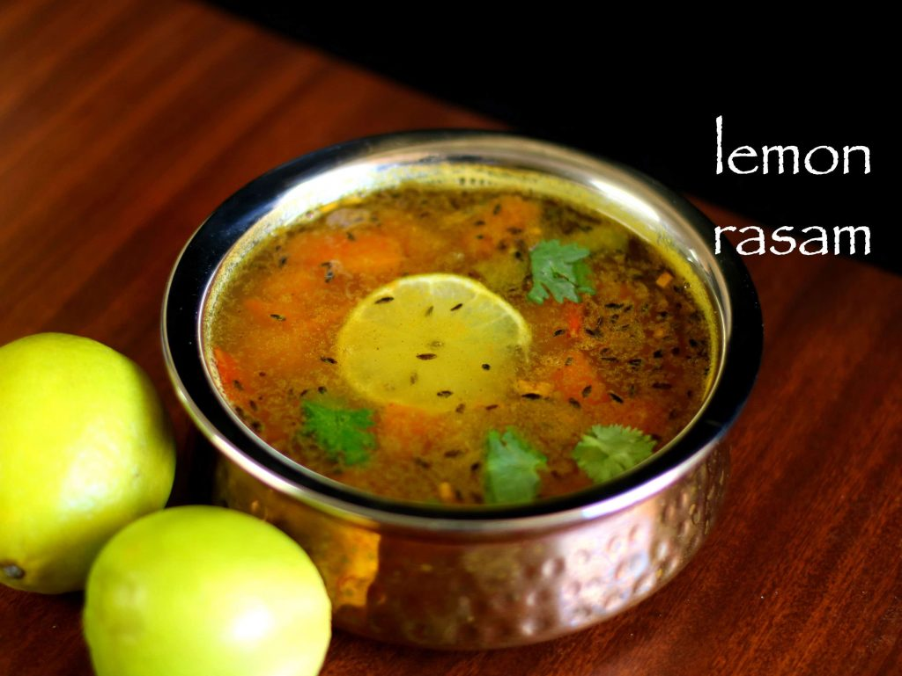

Lemon Rasam

Description
This is a simple healthy and tasty rasam recipe which is ideally served with hot steamed rice. However it can also be served as soup as a appetizer and even for common cold problems.
This thin and watery rasam can be prepared within minutes, yet it delivers an amazing taste.
Ingredients
- 1 medium sized tomato (roughly chopped)
- 1 inch ginger (finely chopped)
- 1 green chili (slit lengthwise)
- 3 tbsp coriander leaves / daniya patta (finely chopped)
- Few curry leaves
- 0.5 tsp turmeric
- 1 cup cooked toor dal
- 0.5 lemon
- Water and Salt
- 1 tbsp ghee
- 1 tsp mustard
Steps
- In a large kadai add tomatoes, ginger, chili, coriander and curry leaves. Also add turmeric and water. Boil for 10 minutes or till tomatoes turn soft and mushy. Then mash the tomatoes well with back of the spatula.
- Add pressure cooked toor dal. Make sure to pressure cook for 5 whistles or till dal is cooked completely. Additionally, add salt to taste. Mix well and adjust consistency by adding water as required.
- Boil for 3 minutes. do not over boil after adding dal, as it leads to gastric problem.
- meanwhile, prepare the tempering by heating up ghee / clarified butter. Once the ghee is hot, add mustard seeds, cumin, red chili, curry leaves, asafoetida and pepper.
- Once the tempering splutter, pour the tempering onto prepared rasam.
- Enjoy the dish.
Back to Home